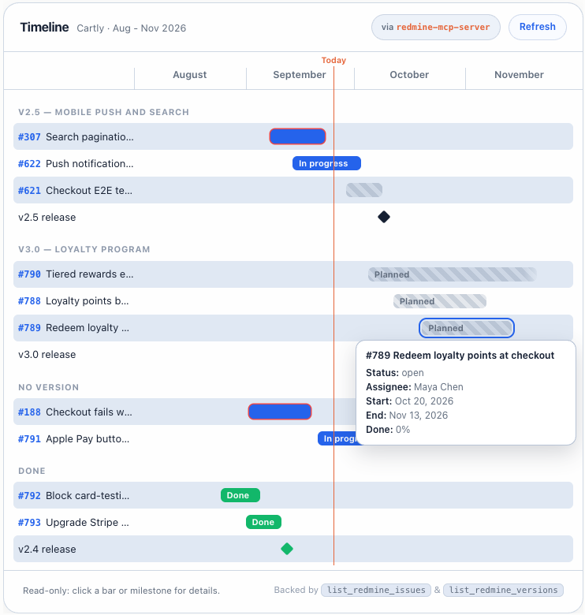

redmine-mcp-server
Your AI shouldn't just read tickets. It works them.
An MCP server that lets Claude Code & other agents triage, update, and close Redmine issues, with a live Kanban board, dashboard, and timeline in the chat.
$ pip install redmine-mcp-server


